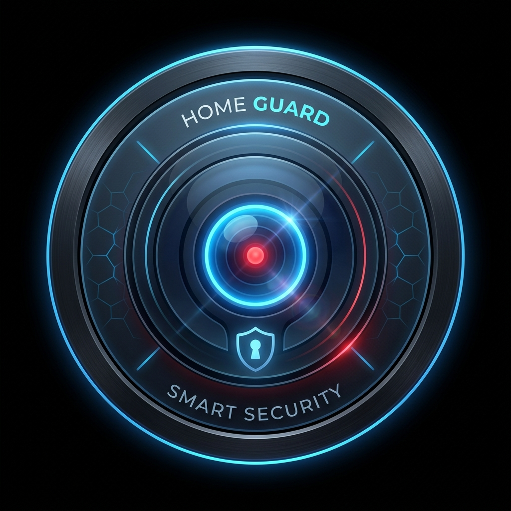

Analyzing AI...
Enter your Home Assistant connection details to manage devices and doorbell alerts.
Select the stream address of your IP cameras and the target screen where the app will display.
Configure person detection parameters and event triggering actions.
